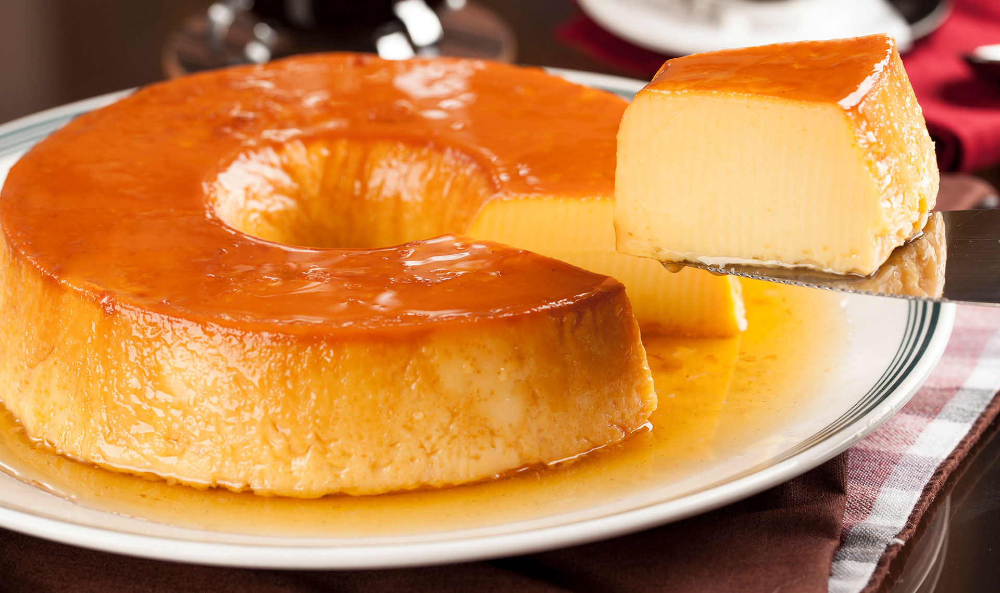

Home
Pudim

O pudim é uma sobremesa clássica brasileira feita com leite condensado, ovos e
leite, coberta com uma deliciosa calda de caramelo. Sua textura cremosa e
sabor suave fazem dele uma escolha irresistível para qualquer ocasião especial.
Ingredientes:
- 1 lata de leite condensado
- 2 latas de leite (use a lata de leite condensado como medida)
- 3 ovos
- 1 xícara de açúcar (para a calda)
Modo de preparo:
- Calda: Derreta o açúcar em uma panela até virar caramelo.
Espalhe na forma de pudim.
- Pudim: Bata no liquidificador o leite condensado,
o leite e os ovos até ficar homogêneo.
- Despeje a mistura na forma caramelizada.
- Asse em banho-maria, forno pré-aquecido a 180°C, por cerca de 1 hora e 30 minutos.
- Deixe esfriar, leve à geladeira e desenforme depois de gelado.
Aproveite seu pudim!